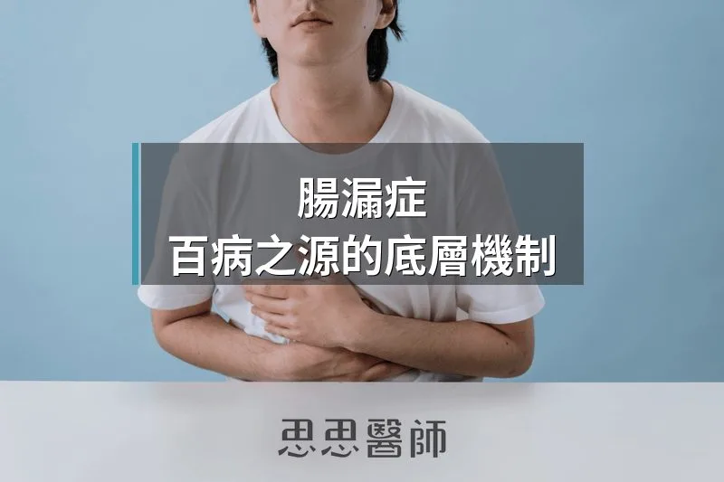

腸漏症，百病之源的底層機制

很多人聽過「腸漏症」這三個字，但通常理解停在：「腸道破了洞，東西漏出來了。」
這個說法方向對，但少說了一件更關鍵的事：漏出去的東西，會讓免疫系統啟動一場持續多年、針對自己身體的戰爭。
腸漏症不是一個獨立的疾病。它是許多慢性病共同的上游，包括自體免疫疾病、第二型糖尿病、非酒精性脂肪肝、甚至失智症。要理解這些病的根源，必須先理解腸道屏障是怎麼運作的，又是怎麼失守的。
腸道屏障，比你想像中更龐大
你的消化道，是一條從嘴巴到肛門的管道。但它不只是個通道，更是你身體最大的屏障界面。整個腸道上皮的表面積，展開後可達40平方公尺。這個面積相當於一個羽球場。
這 40 平方公尺的表面，每天都在處理一件極度矛盾的任務：一邊要讓營養素順利吸收進血液，一邊要把細菌、毒素、未消化的食物顆粒擋在外面。能不能同時做到這兩件事，取決於一個結構：緊密連接（Tight Junction）。
緊密連接
腸道的上皮細胞，彼此之間緊密排列。但細胞和細胞之間存在間隙，這個間隙由蛋白質封住，這就是緊密連接。
緊密連接由幾種關鍵蛋白質組成，包括 claudin、occludin、ZO-1，以及其他連接蛋白。這些蛋白質像是積木一樣組成一道分子閘門。
正常情況下，這個閘門是動態調控的：有分子要通過時開，沒有的時候關。問題在於，這道閘門很脆弱，很多現代生活的因素都會讓它失去控制。
觸發因子
關於哪些日常食品成分會損壞緊密連接，目前已有多項研究提供直接證據。其中乳化劑的研究最為充分：2020 年一項離體研究（PMID: 33333981）直接比較了聚山梨醇酯-80（P80）與羧甲基纖維素（CMC）對人類腸道屏障的影響，發現 P80 在工業使用濃度下顯著增加腸道通透性，並激活黏膜免疫細胞。現知的破壞緊密連接的主要飲食因素包括：
・乳化劑（聚山梨醇酯-80、羧甲基纖維素）：常見於冰淇淋、沙拉醬、加工食品
・麩質（Gluten）：對特定體質的人會觸發 zonulin 分泌，強制打開緊密連接
・微生物轉麩醯胺酶（Microbial transglutaminase）：大量使用於加工肉品、烘焙品
・高果糖和高鹽飲食
・奈米粒子：某些食品添加物的粒子大小已達奈米級
這些不是罕見的食品成分，它們存在於超市裡大多數的加工食品標籤上。
除了食物，以下因素同樣會增加腸道通透性：長期壓力（皮質醇升高）、酒精（直接破壞緊密連接蛋白的結構）、非類固醇消炎藥（NSAIDs，如布洛芬）、腸道菌相失衡（Dysbiosis）、乳化劑。
突破防守的是什麼？
緊密連接失守之後，有幾類物質會穿越腸道上皮，進入到血液循環：
・LPS（脂多醣，Lipopolysaccharide）：革蘭氏陰性菌的細胞壁碎片，是最強效的促發炎物質之一。正常應被限制在腸道內
・未消化的食物抗原：大分子食物蛋白質片段進入血液，免疫系統把它們當成外來入侵者
・腸道細菌：少量活菌或細菌碎片進入體循環，觸發全身性低度發炎
這些物質一旦進入血流，免疫系統會立即反應。問題是，免疫系統不只針對這些外來物——它也可能開始攻擊結構類似的自身組織。這是自體免疫疾病的分子機制之一，稱為「分子模擬（Molecular Mimicry）」。
腸漏和哪些疾病有關？
2025 年，Cureus 期刊發表了一篇系統性回顧與統合分析，作者 Vineesh 等人整合了橫跨紅斑性狼瘡（SLE）、多發性硬化症（MS）、橋本氏甲狀腺炎、類風濕性關節炎、第一型糖尿病、乾癬等六種主要自體免疫疾病的研究，得出一致的結論：所有這些疾病的患者，都出現腸道菌相多樣性下降、腸道通透性升高的特徵。
除了自體免疫疾病，腸道屏障功能異常也跟以下疾病有強烈關聯：
・第二型糖尿病與胰島素阻抗（LPS 進入血液後，直接干擾胰島素訊號傳遞）
・非酒精性脂肪肝（NAFLD）：腸道細菌代謝物經由門靜脈直達肝臟
・肥胖：腸道通透性升高者，脂肪組織中的慢性發炎更嚴重
・失智症：部分研究在阿茲海默症患者腦部組織中，找到腸道細菌特有的蛋白（gingipains）
・自閉症類群障礙（ASD）：腸道屏障功能異常在 ASD 兒童中比例較高
Zonulin，打開腸道防線的鑰匙
Zonulin 是一種由腸道上皮分泌的蛋白質，功能是調控緊密連接的開閉。當腸道感測到特定信號，例如小麥麩質或特定細菌，就會分泌 zonulin，緊密連接隨之打開。
這個機制在演化上有其意義：快速打開腸道屏障，讓免疫細胞可以進入腸腔清除入侵者。問題是，現代飲食和生活型態讓這個機制長期被觸發，本來短暫的防禦反應，變成了慢性的屏障失守。
臨床上，Zonulin 已被用來作為腸道通透性的生物標記，在糞便和血液中都可以測量。但有件事情需要注意：目前市面上部分「zonulin 測試」的準確性仍有爭議，某些商業試劑可能偵測到的是結構類似的補體蛋白，而不是真正的 zonulin。在解讀數值時，要搭配臨床症狀判斷。
怎麼修復腸道屏障
整理了目前有證據支持的保護腸道屏障因素：
・纖維：發酵後產生的短鏈脂肪酸（SCFA），尤其是丁酸（Butyrate），是腸道上皮細胞最重要的燃料，也能抑制發炎基因的表現
・麩醯胺酸（Glutamine）：腸道上皮細胞優先使用的氨基酸，對維持緊密連接蛋白的合成至關重要
・鋅（Zinc）：缺鋅與腸道通透性升高直接相關
・維生素 D：調節緊密連接蛋白的基因表現
・多酚與花青素：抑制促發炎細胞激素對腸道上皮的損傷
腸漏不是診斷，是一個機制
腸漏症沒有標準的診斷碼，傳統醫學對它的接受度也是近幾年才提升。但不代表它不存在，而是代表我們長期低估了腸道屏障功能在全身健康中扮演的角色。
從功能醫學的角度，腸道屏障是所有慢性發炎疾病介入的起點之一。你可能沒辦法輕易診斷出「腸漏」，但你可以選擇：減少超加工食品、增加纖維、補充麩醯胺酸和鋅、管理壓力——這些行為，都是在修復那 40 平方公尺界面的完整性。
腸道和全身的關係，比你以為的更直接。很多看起來是「免疫出問題」或「大腦出問題」的事，可能源頭都在腸道。
參考資料
1. Matar A, Damianos JA, Jencks KJ, Camilleri M. Intestinal Barrier Impairment, Preservation, and Repair: An Update. Nutrients. 2024;16(20):3494. PMID: 39458489
2. Vineesh A, Shah S, Shah K, et al. Exploring the Relationship Between Gut Health and Autoimmune Diseases: A Systematic Review and Meta-Analysis. Cureus. 2025. PMID: 40909091
3. Oscarsson E et al. Changes in Intestinal Permeability Ex Vivo and Immune Cell Activation by Three Commonly Used Emulsifiers. Molecules. 2020;25(24):5897. PMID: 33333981
（本文由我規劃架構與觀點，並協同 AI 校正與潤飾語句）
 空腹小雞跟思思醫師一起斷食，順便養一隻小雞來養小雞 →
空腹小雞跟思思醫師一起斷食，順便養一隻小雞來養小雞 →
好朋友週信
一週一封：《健康駭客週報》這集的研究重點，加上家醫專欄這週的新文章。免費，隨時可以退訂。
延伸閱讀

破解SIBO：小腸細菌過度生長
小腸細菌過度生長導致多種症狀，減少纖維和高糖飲食、間歇性斷食、補充麩醯胺酸等營養素可有助改善狀況。

便秘的原因
便秘分為原發性和次發性，原發性由腸道神經功能障礙或心理壓力引起，次發性與多種疾病和藥物相關。

消脂肪肝，運動強度沒你想的那麼重要
消除脂肪肝的運動強度沒有想像中重要，中等強度有氧運動足以有效改善肝臟脂肪，比高強度訓練更可持續。